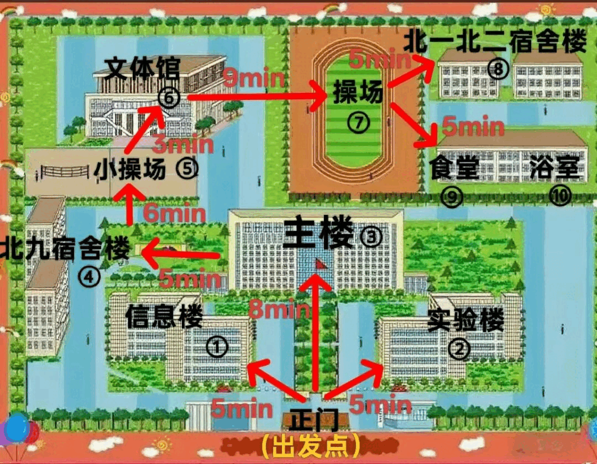
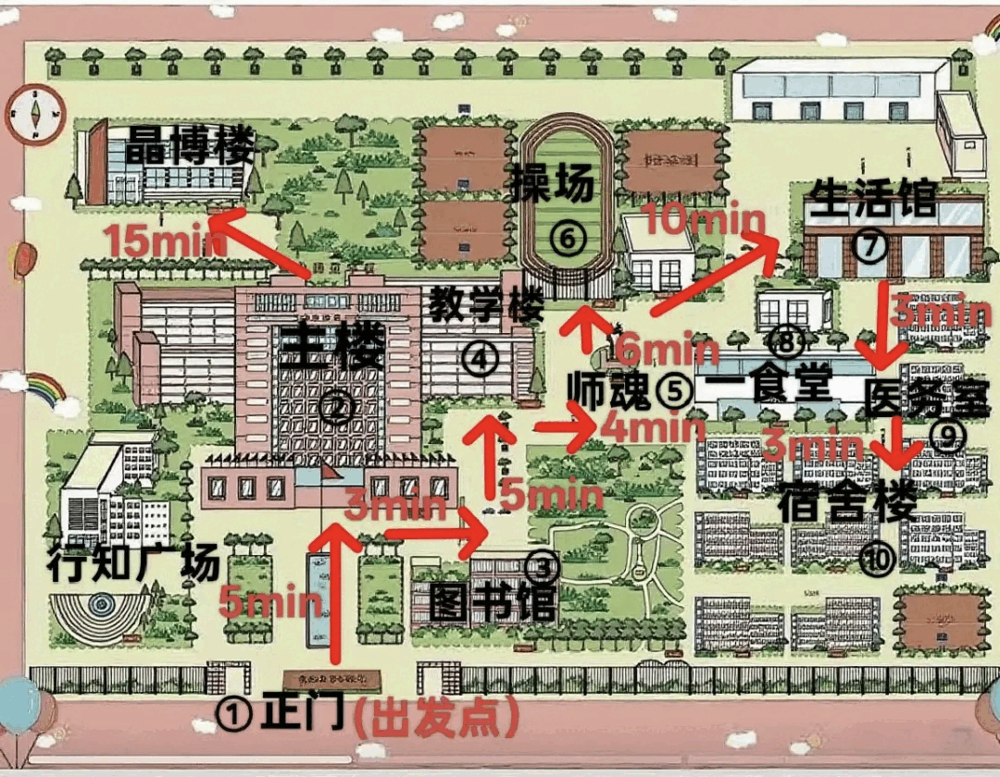
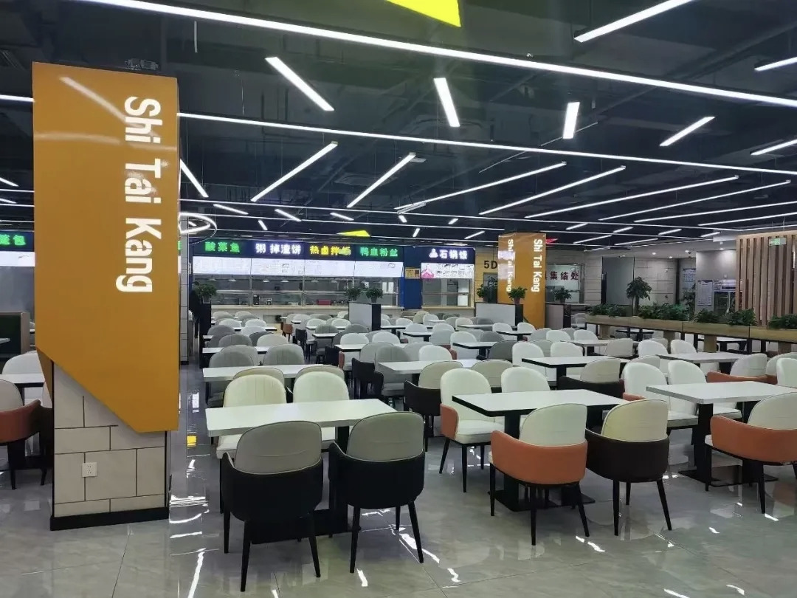

踏入校园的第一天，往往是新生最手忙脚乱的时候——环境陌生、流程不熟，容易跑冤枉路。为了让你报到更顺心、省力，我们整理了这份贴合本校实际的报到全流程和注意事项，照着走就行。
一、报到必备材料
建议把下列材料全部装进一个文件袋，随身携带，报到时随时取用：
- 身份证原件及复印件；
- 高考准考证原件；
- 《唐山师范学院录取通知书》原件；
- 近期免冠一寸、二寸彩色照片数张（底色以红、蓝、白为主，建议留存好电子版）；
- 党团组织关系证明材料（团员需带团员证、团组织关系介绍信等）；
- 个人档案（自带档案的同学切勿提前拆封）；
- 已办理生源地助学贷款的同学，需携带相关贷款证明材料。
二、行李建议
生活用品不必一次性带齐，大件物品可到校后再慢慢添置，学校周边购买也很方便。特别提醒：无需自带整箱矿泉水——宿舍楼每层都配有公共饮水机，自备水杯即可。报到当天本就奔波，扛着一箱水既累赘又没必要。
三、完整报到流程
开学前，学院会安排志愿者提前联系你，同步相关安排，请保持手机畅通。报到当天，校门白天不设严格门禁，你可自行入校，也可跟随志愿者指引行进。
安全提醒：报到期间人员混杂，务必提高警惕，防范校外社会人员混入实施推销、诈骗、盗窃。凡上门推销者，无论说得多么紧急或诱人（尤其是理发卡、廉价笔、付费英语角/英语社团等），一概不要轻信。
温馨提示
- 报到当天校园周边交通压力较大，建议尽量选择公共交通工具出行。
- 如需提前到校或家长陪同，请提前了解学校周边交通、住宿及生活配套，做好食宿安排。


具体步骤
1. 学院帐篷报到
进入校园后，先找到自己所属学院的迎新帐篷，登记信息，领取校园一卡通。校园一卡通入校即自动激活；如需办理校园电话卡，可前往一食堂营业厅咨询办理。
2. 确认宿舍信息
报到时确认自己的宿舍楼栋和房间号，然后前往宿舍楼宿管室，凭相关证件领取宿舍钥匙。
3. 入住宿舍
进入宿舍放置行李后，第一时间检查床铺、门窗、水电设施是否完好。如发现设施损坏，直接到宿管室填写报修表格，学校会尽快安排维修。
完成以上流程后，你就可以直接入住宿舍，安顿下来了。
四、报到当天建议
尽快加入各类通知群
班级群、宿舍群、学院通知群都要及时加入，后续军训安排、班会、选课等重要信息都会在群里发布。
抽空熟悉周边环境
提前了解宿舍楼门禁规则，认准附近食堂、超市、浴室的具体位置，日常生活会更顺畅。

警惕上门推销
报到季是推销高发期，宿舍楼内可能有人上门推销各类产品。一律不要轻易消费，确有需要请到正规商店购买。
五、家长入校说明
家长可以陪同入校，帮忙搬运行李。车辆请按照现场指引有序停放，不能开到宿舍楼下。安顿妥当后，建议家长尽早离校——这样既能帮助新生更快熟悉环境、认识室友，也能为后来的新生家庭让出空间，避免拥堵。
流程总结（照着走就行）
入校 → 学院帐篷报到、领取校园卡 → 宿管室领取宿舍钥匙 → 入住宿舍、检查设施 → 报到完成
唐山师范学院吧务组
2026年7月31日